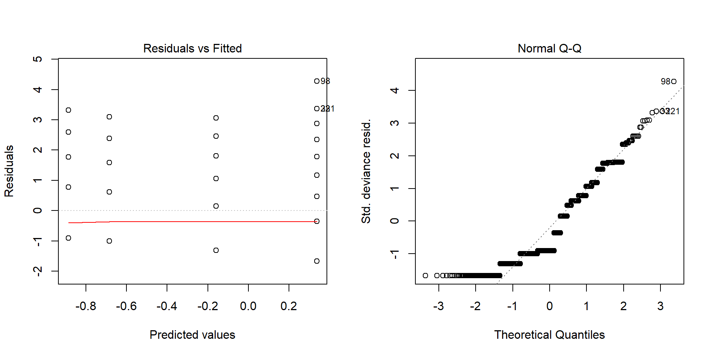
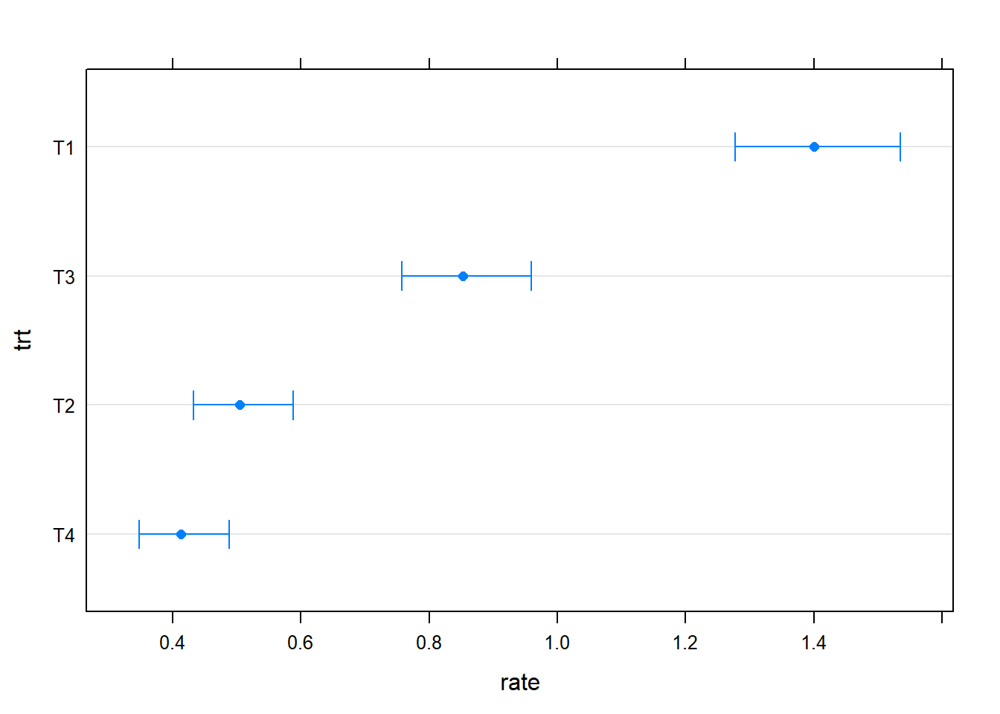

For certain datasets the assumption of normality cannot be met. In such cases we may consider different options: GLM is one of them and it should be a good solution for datasets like counts and presence/absence data (we will look at GLM below). Another option could be to transform the data and “normalize”" them to meet the assumption of normality. However, with transformations we need to be extremely careful because the estimates of the slopes will also be transformed, and so we always need to know how to back-transform our data. The final option would be to use non-parametric tests, which do not assume a normal distribution.
library(agridat)
library(car)
library(Rfit)
library(MASS)
library(tidyverse)
library(lsmeans)
library(lmSupport)
library(multcompView)The non-parametric alternative for the t-test is the Mann-Whitney Test:
S1 = rnorm(n=3, mean=5, sd=2.5)
S3 = rnorm(n=3, mean=6.25, sd=2.5)
wilcox.test(S1, S3, exact=T)##
## Wilcoxon rank sum test
##
## data: S1 and S3
## W = 3, p-value = 0.7
## alternative hypothesis: true location shift is not equal to 0For the one-way ANOVA the non-parametric alternative is the Kruskal-Wallis test:
kruskal.test(yield ~ nf, data=lasrosas.corn) ##
## Kruskal-Wallis rank sum test
##
## data: yield by nf
## Kruskal-Wallis chi-squared = 81.217, df = 5, p-value = 4.669e-16For more complex designs we can use the function raov from the package Rfit:
raov(yield ~ nf * topo, data=lasrosas.corn)##
## Robust ANOVA Table
## DF RD Mean RD F p-value
## nf 5 764.56053 152.91211 21.96030 0.00000
## topo 3 17418.76333 5806.25444 833.85875 0.00000
## nf:topo 15 59.15213 3.94348 0.56634 0.90215Other functions are the friedman.test that can be used for one-way repeated measures ANOVA; moreover, the package ez contains functions to perform non-parametric tests for within-subject and between-subject designs.
As mentioned above, generalized linear models or GLM, can be used in cases of violation of the assumption of normality. These models can work with error distributions that do not fit a normal distribution, so theoretically they could be employed every time we are working with non-normal distributions. However, in order to apply GLM we need to know what distribution to fit to our data. In other words, knowing that the distribution is not normal is not enough, we need to know what other distribution fits our data. This is not the case for non-parametric tests, which only assume non-normality. However, non-parametric tests only allow relatively simple designs, so we need to be careful.
For some datasets though, knowing the distribution is fairly simple and therefore GLM are the preferred choice. One of these datasets is count data, e.g. number of insects, number of events per hours. These data generally fit a Poisson distribution, which looks similar to the histogram below:
Histogram of Poisson Distribution
The characteristic of the poisson distribution is that it only includes non-negative integers (i.e. whole numbers), and usually the large majority of data are close to zero.
GLM still solve linear equations, but because of the data distribution they employ a link function to “linearise” the model. In fact, GLM for count data solve the equation below:
For testing GLM for counts in R we are going to import another dataset from the package agridat:
data(beall.webworms)
str(beall.webworms)## 'data.frame': 1300 obs. of 7 variables:
## $ row : int 1 2 3 4 5 6 7 8 9 10 ...
## $ col : int 1 1 1 1 1 1 1 1 1 1 ...
## $ y : int 1 0 1 3 6 0 2 2 1 3 ...
## $ block: Factor w/ 13 levels "B1","B10","B11",..: 1 1 1 1 1 6 6 6 6 6 ...
## $ trt : Factor w/ 4 levels "T1","T2","T3",..: 1 1 1 1 1 1 1 1 1 1 ...
## $ spray: Factor w/ 2 levels "N","Y": 1 1 1 1 1 1 1 1 1 1 ...
## $ lead : Factor w/ 2 levels "N","Y": 1 1 1 1 1 1 1 1 1 1 ...This dataset represents counts of worms in a beet field, with insecticide treatments.
The syntax to fit GLM in R is very simple and follows the same formula approach we used for previous models:
PoisReg = glm(y ~ trt, data=beall.webworms, family=poisson(link=log)) As you can see the main difference between the syntax for the function glm as compared to lm is that here we need to add the options family, which is the family of distributions for our data, and link, which is the link function for this particular model.
As always we can call the functions Anova…
Anova(PoisReg)## Analysis of Deviance Table (Type II tests)
##
## Response: y
## LR Chisq Df Pr(>Chisq)
## trt 235.45 3 < 2.2e-16 ***
## ---
## Signif. codes: 0 '***' 0.001 '**' 0.01 '*' 0.05 '.' 0.1 ' ' 1and summary to check the details of the model:
summary(PoisReg)##
## Call:
## glm(formula = y ~ trt, family = poisson(link = log), data = beall.webworms)
##
## Deviance Residuals:
## Min 1Q Median 3Q Max
## -1.6733 -1.0046 -0.9081 0.6141 4.2771
##
## Coefficients:
## Estimate Std. Error z value Pr(>|z|)
## (Intercept) 0.33647 0.04688 7.177 7.12e-13 ***
## trtT2 -1.02043 0.09108 -11.204 < 2e-16 ***
## trtT3 -0.49628 0.07621 -6.512 7.41e-11 ***
## trtT4 -1.22246 0.09829 -12.438 < 2e-16 ***
## ---
## Signif. codes: 0 '***' 0.001 '**' 0.01 '*' 0.05 '.' 0.1 ' ' 1
##
## (Dispersion parameter for poisson family taken to be 1)
##
## Null deviance: 1955.9 on 1299 degrees of freedom
## Residual deviance: 1720.4 on 1296 degrees of freedom
## AIC: 3125.5
##
## Number of Fisher Scoring iterations: 6As for the other models we tested above, Anova provides a p-value for the whole treatment, while summary provides p-values for individual contrasts, computed with a Wald test. In this dataset, treatment has 4 levels (T1, T2, T3 and T4). as you can see in the summary table, level T1 is not shown. This is called the reference level and all the p-values are computed based on the comparison between them and the reference level. For example, the p-value for T2 is referred to the contrast between T1 and T2.
In case we need to compute p-values for other contrasts we can simply change the order within the variable trt:
beall.webworms$trt = relevel(beall.webworms$trt, "T4")Now we have changed the reference level to T4, so that if we run the model again we can check p-values for direct comparisons with T4:
PoisReg = glm(y ~ trt, data=beall.webworms, family=poisson(link=log))
summary(PoisReg)##
## Call:
## glm(formula = y ~ trt, family = poisson(link = log), data = beall.webworms)
##
## Deviance Residuals:
## Min 1Q Median 3Q Max
## -1.6733 -1.0046 -0.9081 0.6141 4.2771
##
## Coefficients:
## Estimate Std. Error z value Pr(>|z|)
## (Intercept) -0.88599 0.08639 -10.256 < 2e-16 ***
## trtT1 1.22246 0.09829 12.438 < 2e-16 ***
## trtT2 0.20203 0.11645 1.735 0.0828 .
## trtT3 0.72618 0.10523 6.901 5.16e-12 ***
## ---
## Signif. codes: 0 '***' 0.001 '**' 0.01 '*' 0.05 '.' 0.1 ' ' 1
##
## (Dispersion parameter for poisson family taken to be 1)
##
## Null deviance: 1955.9 on 1299 degrees of freedom
## Residual deviance: 1720.4 on 1296 degrees of freedom
## AIC: 3125.5
##
## Number of Fisher Scoring iterations: 6As you can see, the p-values are different. For example, the p-value for T2 is now not significant. This means that the difference between T2 and T4 is not significant.
We can again use the function plot to produce diagnostic plots:
par(mfrow=c(1,2))
plot(PoisReg, which=c(1:2)) 
The interpretation is the same as for lm. The left plot should indicate a straight line crossing zero, and a constant spread of points. The right QQplot should present quantiles on a straight line. In this case it seems our model could be better particularly in terms of normality of the residuals.
To interpret the coefficients of the model we need to remember that this GLM uses a log link function. Therefore for example the -1.02 is log transformed, so the coefficient for T2 would be exp(-1.02) = 0.36. In terms of interpretation, we can say that the number of worms for T2 is 0.36 times the number of worms for T1 (this is because the coefficient is always referred to the reference level). So there is a decrease, and that is why the coefficient is negative.
More info here: stats.stackexchange.com
As we saw for ANCOVA, we can obtain estimated marginal means using the following line, we just need to add the option to compute the back-transformed mean values:
lsmeans(PoisReg, specs=c("trt"), adjust="tukey", contr="cld", type="response")## trt rate SE df asymp.LCL asymp.UCL .group
## T4 0.4123077 0.03561796 NA 0.3480878 0.4883757 1
## T2 0.5046154 0.03940384 NA 0.4330049 0.5880688 1
## T3 0.8523077 0.05121021 NA 0.7576222 0.9588268 2
## T1 1.4000000 0.06563301 NA 1.2770947 1.5347335 3
##
## Confidence level used: 0.95
## Intervals are back-transformed from the log scale
## P value adjustment: tukey method for comparing a family of 4 estimates
## Tests are performed on the log scale
## significance level used: alpha = 0.05Once again, this function can be plotted:
lsmeans(PoisReg, specs=c("trt"), adjust="tukey", contr="cld", type="response") %>%
plot
In some cases count data can be overdispersed, meaning that the variance of the distribution is higher that what we would expect in case of a poisson distribution. In such cases we need to change the error distribution in the model.
To assess the overdispersion we can compute both variance and mean:
mean(beall.webworms$y); var(beall.webworms$y)## [1] 0.7923077## [1] 1.290164As you can see they are slightly different. If these data followed a perfect poisson distribution, these two values would be almost identical. The fact that the variance is larger than the mean implies a certain degree of overdispersion, which we can account using the “quasi-poisson” distribution:
QuasPois.Reg = glm(y ~ trt, data=beall.webworms, family=quasipoisson(link=log))
summary(QuasPois.Reg)##
## Call:
## glm(formula = y ~ trt, family = quasipoisson(link = log), data = beall.webworms)
##
## Deviance Residuals:
## Min 1Q Median 3Q Max
## -1.6733 -1.0046 -0.9081 0.6141 4.2771
##
## Coefficients:
## Estimate Std. Error t value Pr(>|t|)
## (Intercept) -0.8860 0.1005 -8.812 < 2e-16 ***
## trtT1 1.2225 0.1144 10.686 < 2e-16 ***
## trtT2 0.2020 0.1355 1.491 0.136
## trtT3 0.7262 0.1225 5.929 3.9e-09 ***
## ---
## Signif. codes: 0 '***' 0.001 '**' 0.01 '*' 0.05 '.' 0.1 ' ' 1
##
## (Dispersion parameter for quasipoisson family taken to be 1.35472)
##
## Null deviance: 1955.9 on 1299 degrees of freedom
## Residual deviance: 1720.4 on 1296 degrees of freedom
## AIC: NA
##
## Number of Fisher Scoring iterations: 6There are cases though were the variance is much larger the the mean, and a quasi-poisson would not be appropriate. In such cases we need to resort to using a “negative binomial” distribution of the error term (using a function from the package MASS):
NegBin.Reg = glm.nb(y ~ trt, data=beall.webworms)
summary(NegBin.Reg)##
## Call:
## glm.nb(formula = y ~ trt, data = beall.webworms, init.theta = 2.004130573,
## link = log)
##
## Deviance Residuals:
## Min 1Q Median 3Q Max
## -1.4572 -0.9488 -0.8660 0.5340 2.7698
##
## Coefficients:
## Estimate Std. Error z value Pr(>|z|)
## (Intercept) -0.88599 0.09486 -9.340 < 2e-16 ***
## trtT1 1.22246 0.11283 10.834 < 2e-16 ***
## trtT2 0.20203 0.12896 1.567 0.117
## trtT3 0.72618 0.11893 6.106 1.02e-09 ***
## ---
## Signif. codes: 0 '***' 0.001 '**' 0.01 '*' 0.05 '.' 0.1 ' ' 1
##
## (Dispersion parameter for Negative Binomial(2.0041) family taken to be 1)
##
## Null deviance: 1442.7 on 1299 degrees of freedom
## Residual deviance: 1275.3 on 1296 degrees of freedom
## AIC: 3053
##
## Number of Fisher Scoring iterations: 1
##
##
## Theta: 2.004
## Std. Err.: 0.325
##
## 2 x log-likelihood: -3042.969Another popular form of regression that can be tackled with GLM is the logistic regression, where the variable of interest is binary (0 or 1, presence or absence, and any other binary outcome). In this case the regression model takes the following equation:
The equation is identical to the standard linear model, but what we are computing here is the log of the probability that one of the two outcomes will occur, also referred as logit function.
For this example we are loading the dataset johnson.blight, again available in agridat. Here the binary variable of interest is the presence or absence of blight (either 0 or 1) in potatoes:
data(johnson.blight)
str(johnson.blight)## 'data.frame': 25 obs. of 6 variables:
## $ year : int 1970 1971 1972 1973 1974 1975 1976 1977 1978 1979 ...
## $ area : int 0 0 0 0 50 810 120 40 0 0 ...
## $ blight : int 0 0 0 0 1 1 1 1 0 0 ...
## $ rain.am : int 8 9 9 6 16 10 12 10 11 8 ...
## $ rain.ja : int 1 4 6 1 6 7 12 4 10 9 ...
## $ precip.m: num 5.84 6.86 47.29 8.89 7.37 ...The syntax to fit a logistic regression model is very similar to what we used above:
LogReg = glm(blight ~ rain.am, data=johnson.blight, family=binomial(link=logit)) Once again we can call Anova…
Anova(LogReg)## Analysis of Deviance Table (Type II tests)
##
## Response: blight
## LR Chisq Df Pr(>Chisq)
## rain.am 9.8353 1 0.001712 **
## ---
## Signif. codes: 0 '***' 0.001 '**' 0.01 '*' 0.05 '.' 0.1 ' ' 1…and summary to get the details:
summary(LogReg)##
## Call:
## glm(formula = blight ~ rain.am, family = binomial(link = logit),
## data = johnson.blight)
##
## Deviance Residuals:
## Min 1Q Median 3Q Max
## -1.9395 -0.6605 -0.3517 1.0228 1.6048
##
## Coefficients:
## Estimate Std. Error z value Pr(>|z|)
## (Intercept) -4.9854 2.0720 -2.406 0.0161 *
## rain.am 0.4467 0.1860 2.402 0.0163 *
## ---
## Signif. codes: 0 '***' 0.001 '**' 0.01 '*' 0.05 '.' 0.1 ' ' 1
##
## (Dispersion parameter for binomial family taken to be 1)
##
## Null deviance: 34.617 on 24 degrees of freedom
## Residual deviance: 24.782 on 23 degrees of freedom
## AIC: 28.782
##
## Number of Fisher Scoring iterations: 5The p-values can be interpreted as we described above.
The interpretation of estimates for a logistic regression model are a bit more complex than what we saw for count data. In fact, here we are dealing with a logit transformation and to compute the probabilities we need to solve the following:
here \(\beta_0\) is the value of the intercept (-4.9854), and \(\beta_1\) is the value of the slope for rain.am (0.4467).
Let’s say for example that we need to compute probabilities of blight if rainfall is 10 mm, we need to solve the equation above using the estimates from the model.
exp(-4.9854 + 0.4467 * 10)/(1 + exp(-4.9854 + 0.4467 * 10))## [1] 0.3732264Therefore the probability of blight for rain of 10 mm is 37%. If we need to compute the rate of change, i.e. changes in probabilities for each unit change in rain, we need to use a linear approximation, as suggested by Agresti (2007):
Linear Approximation
where \(\beta\) is the coefficient for rain (0.4467) and \(\pi\) is the probability we just calculated.
The code to solve that is:
0.4467 * 0.37 * (1 - 0.37)## [1] 0.1041258So for each 1 mm of rain the increase in probability is around 10% (allowing for differences due to the linear approximation).
Now that we know how to compute probabilities by hand, you will be happy to know that we can do all this using the function predict and avoid manual computations. For example, to compute the probability for rain.am equal 10 we can simply run:
predict(LogReg, newdata=data.frame(rain.am=10), type="response")## 1
## 0.3732829here newdata is used to tell the model which new dataset to use for prediction, and type="response" is the option to use to get probabilities.
If we want to know the rate of change we can simply predict two values separated by one:
predict(LogReg, newdata=data.frame(rain.am=c(10,11)), type="response")## 1 2
## 0.3732829 0.4821493As you can see the rate of change is around 10% (for this part of the curve).
Proportions can also be analysed with GLM. For this example we can use the dataset crowder.seeds, where the variable germ is the number of seeds that germinated, while n is the total number of seeds:
data(crowder.seeds)
str(crowder.seeds)## 'data.frame': 21 obs. of 5 variables:
## $ plate : Factor w/ 21 levels "P1","P10","P11",..: 1 12 15 16 17 18 19 20 21 2 ...
## $ gen : Factor w/ 2 levels "O73","O75": 2 2 2 2 2 1 1 1 1 1 ...
## $ extract: Factor w/ 2 levels "bean","cucumber": 1 1 1 1 1 1 1 1 1 1 ...
## $ germ : int 10 23 23 26 17 8 10 8 23 0 ...
## $ n : int 39 62 81 51 39 16 30 28 45 4 ...The model is the following:
PropMod = glm(cbind(germ, n) ~ gen + extract, data=crowder.seeds, family="binomial") here we are using the function cbind to compute proportions for the number of seeds that germinated in relation to the total number of seeds. The interpretation of the model is the same as above, with Anova:
Anova(PropMod)## Analysis of Deviance Table (Type II tests)
##
## Response: cbind(germ, n)
## LR Chisq Df Pr(>Chisq)
## gen 0.7439 1 0.3884
## extract 18.3500 1 1.838e-05 ***
## ---
## Signif. codes: 0 '***' 0.001 '**' 0.01 '*' 0.05 '.' 0.1 ' ' 1and summary:
summary(PropMod)##
## Call:
## glm(formula = cbind(germ, n) ~ gen + extract, family = "binomial",
## data = crowder.seeds)
##
## Deviance Residuals:
## Min 1Q Median 3Q Max
## -1.5431 -0.5006 -0.1852 0.3968 1.4796
##
## Coefficients:
## Estimate Std. Error z value Pr(>|z|)
## (Intercept) -1.0594 0.1326 -7.989 1.37e-15 ***
## genO75 0.1128 0.1311 0.860 0.39
## extractcucumber 0.5232 0.1233 4.242 2.22e-05 ***
## ---
## Signif. codes: 0 '***' 0.001 '**' 0.01 '*' 0.05 '.' 0.1 ' ' 1
##
## (Dispersion parameter for binomial family taken to be 1)
##
## Null deviance: 33.870 on 20 degrees of freedom
## Residual deviance: 14.678 on 18 degrees of freedom
## AIC: 104.65
##
## Number of Fisher Scoring iterations: 4again we can use the function predict to compute proportions for particular variables of the predictors.
We can also once again use the following line to perform a multiple comparison. By including the option type="response" the values that are returned are the different proportions:
lsmeans(PropMod, specs=c("extract"), adjust="tukey", contr="cld", type="response")## extract prob SE df asymp.LCL asymp.UCL .group
## bean 0.2683568 0.01957861 NA 0.2317568 0.3084163 1
## cucumber 0.3823148 0.01921926 NA 0.3454166 0.4206218 2
##
## Results are averaged over the levels of: gen
## Confidence level used: 0.95
## Intervals are back-transformed from the logit scale
## Tests are performed on the log odds ratio scale
## significance level used: alpha = 0.05To better explain power analysis for GLM we are going to start by fitting a more complex Poisson model than before:
PoisReg = glm(y ~ block + spray*lead, family = poisson(link = log), data = beall.webworms)Computing power for this model implies calculating its effect size, which can be done by computing the partial Eta Square as follows:
we can obtain these values by computing the type III deviance table with the function Anova:
Anova(PoisReg, type=3)## Analysis of Deviance Table (Type III tests)
##
## Response: y
## LR Chisq Df Pr(>Chisq)
## block 122.040 12 < 2.2e-16 ***
## spray 142.349 1 < 2.2e-16 ***
## lead 43.721 1 3.787e-11 ***
## spray:lead 4.452 1 0.03485 *
## ---
## Signif. codes: 0 '***' 0.001 '**' 0.01 '*' 0.05 '.' 0.1 ' ' 1The numerator of the equation above can be taken directly from this table. For example, if we want to compute the effect size for lead we would use 43.721 as \(Dev_{treatment}\). For the denominator we need to obtain the residual deviance:
anova(PoisReg)## Analysis of Deviance Table
##
## Model: poisson, link: log
##
## Response: y
##
## Terms added sequentially (first to last)
##
##
## Df Deviance Resid. Df Resid. Dev
## NULL 1299 1955.9
## block 12 122.040 1287 1833.8
## spray 1 188.707 1286 1645.2
## lead 1 42.294 1285 1602.8
## spray:lead 1 4.452 1284 1598.4from this output we can see that the residual deviance is 1598.4. So now we can compute the partial Eta Squared:
pEta2 = 43.721 / (43.721 + 1598.4)
pEta2## [1] 0.02662471Now that we have the specific effect size we can use the function modelPower within the package lmSupport. Here we need to specify pc which are the degrees of freedom of all terms except the element of interest. In this case we know ho to compute it because we just need to look at the ANOVA table above. If we exclude lead the degrees of freedom are 12+1+1. Another parameter we need to include is pc, which includes all degrees of freedom, including the element of interest, so basically: 12+1+1+1. Finally, to perform a post-hoc test we also need to include the number of samples N. The function will return the estimated power:
modelPower(pc=12+1+1, pa=12+1+1+1, N=nrow(beall.webworms), alpha=0.05, peta2=pEta2)## Results from Power Analysis
##
## pEta2 = 0.027
## pa = 15
## pc = 14
## alpha = 0.050
##
## N = 1300.000
## power = 1.000For an a-priori power analysis we still need to specify both pa and pc. For example, let’s say we have an experiment with two treatments (the first with 4 levels, the second with 2) and we are also including a continuous explanatory variable. Let’s assume we want to design an experiment powered to detect the interaction between the two treatments. In this case the degrees of freedom for the model without the interaction will be: \(pa = (4-1)+(2-1)+1 = 5\); the degrees of freedom for the full model, which includes the interaction would be: \(pc = (4-1)+(2-1)+1+[(4-1)+(2-1)] = 8\). The last element we need to include is the medium effect size:
modelPower(pc=5, pa=8, alpha=0.05, f2=0.15, power=0.8)## Results from Power Analysis
##
## f2 = 0.150
## pa = 8
## pc = 5
## alpha = 0.050
##
## N = 80.706
## power = 0.800The function returns directly the total number of samples N, which is 81.
In this lecture we looked at methods to deal with data that do not follow a normal distribution.
Please look at my Blog for additional functions that were not covered in the lecture:
Copyright © 2018 Dr. Fabio Veronesi - Creative Commons Attribution 3.0 Unported